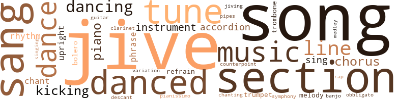
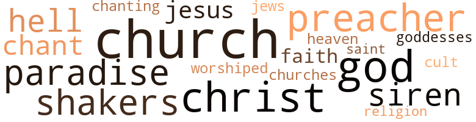

Waiters (The), by Fisher, William (1953)
176 music-related terms matched in this text.
Most frequent terms in this topic: jive (19); song (14); section (13); sang (12); music (9)
accordion.n.01
Definition: a portable box-shaped free-reed instrument; the reeds are made to vibrate by air from the bellows controlled by the player
| word | sentence |
|---|---|
| accordions | Rolling his icy eyes about the eatery he watched the Smiths with their next-door neighbors , the Joneses , from Long Island ; the genteel old ladies , on their annual out-for-the-day expedition , having a glass of sherry with their dinner to warm their half-dead carcasses ; the mean-eyed who " oh-myed " the colored waiters ; the out-of-towners , green-arrowed to the place by the billboards ; the scrub-faced young women who patterned themselves after the models in the slick magazines ; the shopgirls enthralled with the place , and their sleek-haired young dappers in open-necked , yellow shirts and two-toned slack coats that looked liked sawed-off bathrobes ; the schemers who after whispering among themselves cut their tips a third or even half because the colored boys did n't need as much to live on as white waiters ; the fat and frowzy in bursting halters , their midriffs billowing out like accordions ; , the white-haired with the twinkle of the old rascal in their paunchy eyes , gay-ninety-ing their sweethearts ; salty City Islanders who boasted of living in the country within the city ; and a host of others a little surprised at themselves in their new surroundings , but nevertheless there . |
| accordion | From the back room came the strains of " Galway Bay " being punched out on an accordion , while a full-voiced chorus of City Islanders , out for their night on the town , sang " If you ever go across the sea to Ireland . " |
| accordion | He was leaning back against a section of the mahogany cabinets with his arms folded across his chest , listening to the back room revelers as they stomped their feet on the loose planked floor and clapped their hands lustily to the accordion player 's brisk dance notes of " The Stack of Barley . " |
| accordion | The accordion player was punching out " Galway Bay " again , as Mike , strutting in time to the music , carried a round bar tray full of empty beer glasses in the palm of one hand to the beer pumps . |
banjo.n.01
Definition: a stringed instrument of the guitar family that has long neck and circular body
| word | sentence |
|---|---|
| banjo | Look at his little finger sticking out from his glass like it 's a banjo peg . " |
bolero.n.01
Definition: music written in the rhythm of the bolero dance
| word | sentence |
|---|---|
| bolero | She was in a summer suit , a suit he had never seen before , a short red cotton skirt with a white bolero jacket , and she was swinging a small white cap in her hand . |
| bolero | In one hand she clutched her white bolero jacket and pocketbook , and her small white cap sat lopsided on her head , as though pasted there , while stray wisps of hair fluttered out from beneath it . |
chant.n.01
Definition: a repetitive song in which as many syllables as necessary are assigned to a single tone
| word | sentence |
|---|---|
| chant | Yet the chant went deeper , encompassing a whole way of life . |
| chant | As he sat dreaming , Asher punctuated his thoughts with the chant - Hope-er-hope-er-hope - as the preachers he had heard in his childhood accentuated the lilt of their words when they talked of the Great City beyond . |
| chant | A phonograph was playing ... a trombone wah-wahhed moan-fully , like a voice out of the dark calling for help ... a trumpet took up the chant , sobbing in despair ... a clarinet echoed moody , melancholy . . . while a piano , jazz-mad - its treble tinkling , bass rumbling like thunder - carried the melody in a fast-paced staccato . |
chorus.n.01
Definition: any utterance produced simultaneously by a group
| word | sentence |
|---|---|
| chorus | And Hope-er-hope-er-hope swelled within him until it was like a chorus of many surging voices . |
| chorus | Yes , in this chorus there were many voices . |
| chorus | She was greeted by a loud chorus of stilted hellos . |
| chorus | From the back room came the strains of " Galway Bay " being punched out on an accordion , while a full-voiced chorus of City Islanders , out for their night on the town , sang " If you ever go across the sea to Ireland . " |
| chorus | Mike joined the waiters in a chorus of hello 's such as are ordinarily reserved for someone just returned from a trip . |
clarinet.n.01
Definition: a single-reed instrument with a straight tube
| word | sentence |
|---|---|
| clarinet | A phonograph was playing ... a trombone wah-wahhed moan-fully , like a voice out of the dark calling for help ... a trumpet took up the chant , sobbing in despair ... a clarinet echoed moody , melancholy . . . while a piano , jazz-mad - its treble tinkling , bass rumbling like thunder - carried the melody in a fast-paced staccato . |
cornet.n.01
Definition: a brass musical instrument with a brilliant tone; has a narrow tube and a flared bell and is played by means of valves
| word | sentence |
|---|---|
| trumpet | A phonograph was playing ... a trombone wah-wahhed moan-fully , like a voice out of the dark calling for help ... a trumpet took up the chant , sobbing in despair ... a clarinet echoed moody , melancholy . . . while a piano , jazz-mad - its treble tinkling , bass rumbling like thunder - carried the melody in a fast-paced staccato . |
| trumpet | The trombone and the trumpet would be wailing low , the piano-player poundin ' the box to beat the band . |
counterpoint.n.01
Definition: a musical form involving the simultaneous sound of two or more melodies
| word | sentence |
|---|---|
| counterpoint | Intermingled with the music , there was the sound of feet shuffling as if in counterpoint . |
dance.n.01
Definition: an artistic form of nonverbal communication
| word | sentence |
|---|---|
| dance | It was a song born of the restlessness and fretfulness of a people seeking to drown their thirst for life in song and dance . |
| dance | " At a dance , " Ester replied . |
| dance | The sun , trying feebly to penetrate the torrid haze which hung over Rochelle Street , made little black spots dance in front of the windows of the snow-white , log-walled room . |
| dance | He was leaning back against a section of the mahogany cabinets with his arms folded across his chest , listening to the back room revelers as they stomped their feet on the loose planked floor and clapped their hands lustily to the accordion player 's brisk dance notes of " The Stack of Barley . " |
dance.v.02
Definition: move in a pattern; usually to musical accompaniment; do or perform a dance
| word | sentence |
|---|---|
| dancing | Chief was snake - dancing a group , single file , through the restaurant . |
dance.v.03
Definition: skip, leap, or move up and down or sideways
| word | sentence |
|---|---|
| danced | All of this danced up and down in his mind like the great sheets of rain that he saw dancing across City Island Road when he looked out of the windows - dancing like a well-trained chorus line in elfin hoods . |
| dancing | Then she smiled at Asher , her large black eyes dancing mischievously . |
| dancing | It was a steaming hot Decoration Day - his first day to report for work - and the heat in the delivery court was almost tangible , hanging in the air like spots dancing before one 's eyes . |
| dancing | She watched the sparrows skipping through the small trees - like marionettes dancing to a Viennese waltz - before a row of unoccupied Coast Guard barracks at right angles to the fence . |
| danced | In smaller parties of fives and sixes , they came like the whitecaps that danced shoreward in the wake of the breath-taking rollers . |
| dance | He put four singles in Chief 's hand and the headwaiter 's eyes began to dance merrily as he flashed a broad grin . |
| danced | Jordon 's eyes danced in anticipation of the drink as he reached for the large checkbook sticking out of Asher 's pocket , but Asher pulled himself beyond his reach . |
| danced | Dowd 's small eyes danced merrily , in his lean face as he watched Asher pull a fat wad of bills from his trousers pocket , counting out loud as he peeled off $ 135 - the man 's winnings - letting the bills fall casually from his hands onto the desk . |
| danced | Squeezed into a narrow space along one side of the living-room , four couples danced in the dim amber light . |
| dance | They were Casablanca , Asher 's glad-handing pal , and his wife , Miss Geor-giana , as he called her , a retiring , sharp-nosed , matronly woman who looked as though she were waiting for the whisky to take effect so that her hips and feet might get " loose , " too ; Raymond , the " hi-de-ho " boy , who listened to the music as if in a trance , sitting with Rose , a plump , pleasant-faced young woman , who moved her feet nervously about as though she , too , itched to dance ; Harold Trubee , the young Virginian who was preparing to be an undertaker , holding the frail , limp hand of Peggy , his girl friend , a tormented little creature who wore an expression of forlorn boredom as if she 'd be glad when the party was over so she could take her " future " home ; there was " Big " Jackson , the smartly dressed " sportsman " in a brown and tan ensemble , looking old and tired as a hawk , whose face in repose suggested that his stronger passions had now passed over into his love of the horses . |
| dance | Play somethin' somebody can dance by . |
| dance | Finally , she ceased her swaying and began to dance . |
| danced | All of them danced with her ; some several times . |
| danced | And she danced with enthusiasm , with passion , intoxicated with pleasure , thinking of nothing , in the triumph of her birthday party , in the glory of her success , in a kind of cloud of happiness that came of this homage , and all this admiration , of all these awakened desires , and this victory so complete and soul-satisfying to the heart of woman . |
| danced | Like a ringwise fighter feinting his opponent , he danced in front of Slater and Casablanca as , at the same time , he gestured wildly as though they were being watched by someone at a window within the restaurant . |
| dancing | Every so often he yanked his head from side to side , like a pitcher on the mound watching runners dancing off first and second while he fingered the ball . |
| danced | Even along Pelham Parkway , where the fuzzy fog lights danced like tiny yellow flags , he had to inch ahead . |
descant.n.01
Definition: a decorative musical accompaniment (often improvised) added above a basic melody
| word | sentence |
|---|---|
| descant | The trombone player , the trumpeter and the drummer each struck different chords in a catch-as-catch-can descant while the piano carried the stammering strain of accompaniment . |
guitar.n.01
Definition: a stringed instrument usually having six strings; played by strumming or plucking
| word | sentence |
|---|---|
| guitar | He strummed a guitar and sang " Carry me back to the lone prairie " to a group of youngsters clustered around him . |
jive.v.01
Definition: dance to jive music; dance the jive
| word | sentence |
|---|---|
| Jive | Jive an ' more jive . |
| jiving | Man , who 'd have thought they 'd be jiving each other instead of ganging up on him like women do when they get together and start panning men . |
| jive | " You ca n't jive the jiver , " he said . |
kick.v.04
Definition: kick a leg up
| word | sentence |
|---|---|
| kicking | Up and down the broad corridors of the kitchen was a great throng of tray-laden waiters locked and wedged together in a heaving mass , pushing and kicking each other , as each man sought an opening . |
| kicking | And it was inconsequential if , in kicking for an opening , one waiter got kicked in the shins or lost a trayful of food . |
| kicking | From this accidental pushing and kicking , it was a natural step to intentional kicking , or hacking , as the waiters called it . |
| kicking | From this accidental pushing and kicking , it was a natural step to intentional kicking , or hacking , as the waiters called it . |
| Kicking | Kicking at Slater viciously , he sent his arm flying from his pocket and , his foot sinking into the man 's ribs , doubled him over in a knot . |
medley.n.01
Definition: a musical composition consisting of a series of songs or other musical pieces from various sources
| word | sentence |
|---|---|
| medley | And tapping one foot as if in time to music , his shoulders would swing and sway ; his eyes turned as if he had an image of the party - people moving excitedly about , their voices a medley of gay and rippling laughter . |
music.n.01
Definition: an artistic form of auditory communication incorporating instrumental or vocal tones in a structured and continuous manner
| word | sentence |
|---|---|
| music | It was a well-rehearsed act they went through night after night , for it was music to their hearts . |
| music | And tapping one foot as if in time to music , his shoulders would swing and sway ; his eyes turned as if he had an image of the party - people moving excitedly about , their voices a medley of gay and rippling laughter . |
| music | Intermingled with the music , there was the sound of feet shuffling as if in counterpoint . |
| music | The men were bent over in a crouch while the girls , at arm 's length , wiggled their hips and legs in time to the music . |
| music | They were Casablanca , Asher 's glad-handing pal , and his wife , Miss Geor-giana , as he called her , a retiring , sharp-nosed , matronly woman who looked as though she were waiting for the whisky to take effect so that her hips and feet might get " loose , " too ; Raymond , the " hi-de-ho " boy , who listened to the music as if in a trance , sitting with Rose , a plump , pleasant-faced young woman , who moved her feet nervously about as though she , too , itched to dance ; Harold Trubee , the young Virginian who was preparing to be an undertaker , holding the frail , limp hand of Peggy , his girl friend , a tormented little creature who wore an expression of forlorn boredom as if she 'd be glad when the party was over so she could take her " future " home ; there was " Big " Jackson , the smartly dressed " sportsman " in a brown and tan ensemble , looking old and tired as a hawk , whose face in repose suggested that his stronger passions had now passed over into his love of the horses . |
| music | The music stopped , the foyer was suffocatingly hot , and Ester felt herself trembling with excitement . |
| music | As the strains of " The Old Timer 's Polka " rang out from the back room , the three men drank their drinks quickly , as though impelled by the music . |
| music | The accordion player was punching out " Galway Bay " again , as Mike , strutting in time to the music , carried a round bar tray full of empty beer glasses in the palm of one hand to the beer pumps . |
| music | He put his nickel on " If I Had You , " shaking his head in time with the music . |
musical_instrument.n.01
Definition: any of various devices or contrivances that can be used to produce musical tones or sounds
| word | sentence |
|---|---|
| instrument | Then , suddenly , he eyed the instrument panel - a marvel of gleaming gadgets set in a slab of richly grained oak - as if he were seeing it for the first time . |
| instrument | Then she watched with fascination as Asher snapped a switch on the instrument panel and the power-operated canvas top slowly rose and folded into the narrow trough behind the rear seat . |
| instrument | Her gaze shifted in a wondering look at the instrument panel . |
| instrument | Then , inexplicably , Ester snatched the ignition key from its keyhole in the instrument panel and , hopping out of the car , ran into the vestibule . |
| instrument | Asher sat close to Ester - almost touching her - and in the dim light issuing from the instrument panel of the car his eyes seemed to glow in prideful satisfaction as she examined the watch . |
obbligato.n.02
Definition: a part of the score that must be performed without change or omission
| word | sentence |
|---|---|
| obbligato | For each time this obbligato of doom had carried its part he saw the small , black eyes in the Kingfish 's pale face holding out promises of better things to come . |
phrase.n.02
Definition: a short musical passage
| word | sentence |
|---|---|
| phrase | Although Dave 's phrase carried with it the ring of congratulation , Asher did not answer . |
| phrase | " We 're gon na have a ball , " Dowd would say , like an adult trying , as he emulated an adolescent 's slangy language , to find the hidden meaning in the phrase . |
| phrase | Each one got the news from him in strict secrecy , and he used the phrase " Man , it 's gon na be reeal groovy down at Ol' Man Dowd 's . " |
piano.n.01
Definition: a keyboard instrument that is played by depressing keys that cause hammers to strike tuned strings and produce sounds
| word | sentence |
|---|---|
| piano | " We 'll be up there behind the piano . " |
| piano | " No you do n't , man , " Jordon said as he reached across the rounded end of the piano and took one of the whisky sours off Asher 's tray . |
| piano | A phonograph was playing ... a trombone wah-wahhed moan-fully , like a voice out of the dark calling for help ... a trumpet took up the chant , sobbing in despair ... a clarinet echoed moody , melancholy . . . while a piano , jazz-mad - its treble tinkling , bass rumbling like thunder - carried the melody in a fast-paced staccato . |
| piano | The trombone player , the trumpeter and the drummer each struck different chords in a catch-as-catch-can descant while the piano carried the stammering strain of accompaniment . |
| piano | From where Asher stood , near the concert grand piano at the entrance to the room , his shoulders squared and chest expanded , he watched the waiters droning through their work . |
piano.n.02
Definition: (music) low loudness
| word | sentence |
|---|---|
| pianissimo | On a bright , sunshiny day - that Decoration Day - when the crowds had gone elsewhere , when the cash register played the pianissimo , rather than the crescendo , of the symphony of mounting profit , the Kingfish cracked his " whip " at a waiter over any minute infraction of any one of his million rules . |
pipe.n.04
Definition: a tubular wind instrument
| word | sentence |
|---|---|
| pipes | Little pools of water had formed on the floor from the dripping pipes . |
rap.n.05
Definition: genre of African-American music of the 1980s and 1990s in which rhyming lyrics are chanted to a musical accompaniment; several forms of rap have emerged
| word | sentence |
|---|---|
| rap | The sharp rap of heels behind him made Asher glance up over his shoulder again . |
refrain.n.01
Definition: the part of a song where a soloist is joined by a group of singers
| word | sentence |
|---|---|
| refrain | Hattie began to clap her hands and tap her feet self-consciously as she started to sing : " Happy birthday , to you ; happy birthday , to you ; happy birthday , dear Ester . . . " One by one , in tune and out of tune , everyone in the room took up the refrain , their voices creaking and croaking . |
| refrain | In singsong fashion , like a person repeating a refrain aloud to himself , he 'd continue : " L-o-r-d To-day ! |
rhythm.n.04
Definition: the arrangement of spoken words alternating stressed and unstressed elements
| word | sentence |
|---|---|
| rhythm | The more he listened to its rhythm the louder , the angrier , the more determined its beat became - only to be met at its crescendo and subdued for a time by the shrill of the siren . |
| rhythm | A simple jingle , it picked up a drumlike rhythm through his sheer chanting repetition of it - I hope , I hope , I hope . |
| rhythm | Gim me a pig foot and a bottle of beer Send me Gate I do n't care I feel just like I wan na clown Give the piano-player a drink Because he 's got rhythm - yeah He sends me right off to sleep * As the song progressed , Asher grew more and more troubled and restless . |
section.n.01
Definition: a self-contained part of a larger composition (written or musical)
| word | sentence |
|---|---|
| section | So they had put him to work in a section of the restaurant the boys called the " farm . " |
| section | It was so called because most of the tables in this section were reserved for couples and , at the boss 's orders , these tables were served by the waiters who had grown old and feeble making money for him . |
| section | For it was a house - one of the few in that section of the city - where the landlord consented to so nebulous a cut into his profits as to provide front-door lock and key . |
| section | The old store that housed Jock 's was the largest one-story building in that section of Fordham Road known as the Bronx automobile mart . |
| section | Everybody was trooping back and forth , from the living-room to the kitchen , where in the parti-tioned-off section which served as a dining space and opened onto the foyer , a makeshift bar had been set up on the kitchen table . |
| section | Inside the restaurant , a confusion of sound filled the section of the main dining-room known as " Broadway " - the center of the room that was set apart by two shoulder-high copper screens which ran from the white colonial doorway to the parking-lot entry . |
| section | An it 'll be way after seven ' fore they gits back in the second section . " |
| section | He waved away a small crowd of unescorted diners who had followed him into the empty section of the restaurant . |
| section | " This section 's reserved ! " he barked at them . |
| section | In the section of the room between the hole and the kitchen swinging doors , Slater , headed for the kitchen with a trayload of soiled dishes , indicated with a wave of his free hand to Asher , who was on the way to his station with desserts , that he 'd give him the right of way . |
| section | Asher strolled to the center of the room and found himself a section of the copper screening in front of which there were no chairs . |
| section | He was leaning back against a section of the mahogany cabinets with his arms folded across his chest , listening to the back room revelers as they stomped their feet on the loose planked floor and clapped their hands lustily to the accordion player 's brisk dance notes of " The Stack of Barley . " |
| section | The electric lights in the store signs blinking on and off in the business section of Fordham Road , like cats ' eyes made blurry by bushy eyebrows , diverted her attention for a few minutes . |
sing.v.02
Definition: produce tones with the voice
| word | sentence |
|---|---|
| sang | He strummed a guitar and sang " Carry me back to the lone prairie " to a group of youngsters clustered around him . |
| sing | It was a day that allowed him to sing " I 'm a waiter " with a deep feeling of pride , with a feeling of joy in his craft , with the soul-satisfying feeling of doing a good job . |
| sang | And a woman 's tired voice sang " Nearer my God to Thee . " |
| sing | Further up the areaway , an adolescent cried in mocking sympathy : " A woman 's two-faced , a worrisome thing ; she 'll lead you to sing the blues in the night . " |
| sing | And , swaying slightly back and forth on his heels , Asher felt himself being caught up in the eternal excitement of the Avenue , and he began to sing aloud , " I got the world in a bag an ' the string ' round my finger . . . . " Then , with rapid strides , he walked to Ester 's house . |
| sang | When he had counted the money over twice to his apparent satisfaction he handed Walters a ten-spot and , turning about , walked from the room , chuckling aloud as he sang from a spiritual , " Happy am I. " Amos Dowd and his wife , Mattie , had wanted to throw a party ever since they 'd moved into what they called the Big House . |
| sing | Hattie began to clap her hands and tap her feet self-consciously as she started to sing : " Happy birthday , to you ; happy birthday , to you ; happy birthday , dear Ester . . . " One by one , in tune and out of tune , everyone in the room took up the refrain , their voices creaking and croaking . |
| sang | In a loud and full-throated and plangent voice , she sang of a gnawing fear and the memory of hard times in a trouble-filled world . |
| sang | Up in Harlem every Saturday night When the high browns get together It 's just too tight They all congregate at an all-night strut And what they do is tut-tut-tut * She sang of parties where , after a week of unrewarding toil , people got together to forget Mr. Charley 's hard knocks . |
| sang | She sang of Saturday nights , when work was done and Mr. Charley 's restraints were forgotten and people felt free to invite themselves to other people 's parties - whether wanted or not . |
| sang | She sang these things with a personal sadness . |
| sang | Ol' Hannah Brown from cross town Gets full of corn and starts breaking 'em down Just at the break of day you can hear ol' Hannah say . . . * She sang of the raw stuff of life in the ghetto , the leftovers , fashioning them into symbols that spoke boldly of a people 's overflowing vitality and of their everlasting faith and hope in a new life that would surely , one day , be a-borning . |
| sang | She sang , too , of their willingness to offer a token premium to one of their own who somehow had acquired a polish , a smoothness , even a slickness like that which seemingly enabled Mr. Charley to lead a life of ease . |
| sang | She sang of all these things , in a voice that was harsh and volcanic , but seductive and sensuous , too . |
| sang | From the back room came the strains of " Galway Bay " being punched out on an accordion , while a full-voiced chorus of City Islanders , out for their night on the town , sang " If you ever go across the sea to Ireland . " |
| sang | And he sang a song of lamentation in the locker-room that night - as only a waiter who has been bitten by a lot of cheap snakes can . |
singing.n.01
Definition: the act of singing vocal music
| word | sentence |
|---|---|
| singing | All dressed in a shimmerin ' white gown like what them singing church sisters wear , down to her ankles , touched up ' bout the neck wid little pieces of colored glass . |
song.n.01
Definition: a short musical composition with words
| word | sentence |
|---|---|
| songs | It gave songs the " sharpies " selected to put their sweater-girls in a mellow mood , the songs that loosened up the proud-acting woman , the songs that brought mistiness to the eyes of the middle-aged - songs of tenderness , of longing , of heartbreak and of humor . |
| songs | It gave songs the " sharpies " selected to put their sweater-girls in a mellow mood , the songs that loosened up the proud-acting woman , the songs that brought mistiness to the eyes of the middle-aged - songs of tenderness , of longing , of heartbreak and of humor . |
| songs | It gave songs the " sharpies " selected to put their sweater-girls in a mellow mood , the songs that loosened up the proud-acting woman , the songs that brought mistiness to the eyes of the middle-aged - songs of tenderness , of longing , of heartbreak and of humor . |
| songs | It gave songs the " sharpies " selected to put their sweater-girls in a mellow mood , the songs that loosened up the proud-acting woman , the songs that brought mistiness to the eyes of the middle-aged - songs of tenderness , of longing , of heartbreak and of humor . |
| Songs | Songs that were played over and over , night after night , in every Harlem bar . |
| song | The moanful love song , " If I Had You , " sounded like the great tribulations of " If I Had My Way . " |
| song | But the most popular song , the one that was played over and over , was " That Chippy 's Not Ready for Pluckin ' . " |
| song | Slowly , however , he became aware that there was about the man 's expression a sad , wailing undertone such as he had caught in many a blues song . |
| song | And they were united in variations of a single song - How we gon na get a break ? |
| song | When he looked at Ester again he saw that her eyes were wide open , and after a while Asher heard her voice , hardly audible , and the whispered hum of a song that he recognized with a little tingling thrill of delight . |
| song | He heard the swishing sound that the light wind made as it cascaded over the slanting windshield , drifting over his head like the low , deep , libidinous sighs coming from a person moved by a haunting blues song . |
| song | Jus ' like singin ' a song , back-and-forth . |
| song | Thinks he 's like the song , ' Got the world by a drawstring . ' |
| song | But when Bessie opened her mouth , the song was there . |
| song | It was a song born of the restlessness and fretfulness of a people seeking to drown their thirst for life in song and dance . |
| song | It was a song born of the restlessness and fretfulness of a people seeking to drown their thirst for life in song and dance . |
| song | Gim me a pig foot and a bottle of beer Send me Gate I do n't care I feel just like I wan na clown Give the piano-player a drink Because he 's got rhythm - yeah He sends me right off to sleep * As the song progressed , Asher grew more and more troubled and restless . |
| song | And he sang a song of lamentation in the locker-room that night - as only a waiter who has been bitten by a lot of cheap snakes can . |
| song | Some of the waiters sighed , others shook their heads from side to side , while the faces of all were lit up with an expression of knowing , of under - standing , as the singer of this unhappy moodiness repeated each second line of the song with only a slight variation : " I never seen a real tough town befo ' " Things are tough , an ' money is tight " Soon 's I ketch the tough town number " I 'll be long gone from here " At the bar were the waiters : a homesick stray from Chicago ; an actor down on his luck waiting tables between shows ; an older man whom the waiters had named Ole Man Mose because every diner was for him cap'n or madam ; a waiter who , because he had served on an African-bound transport during the war , called everyone he liked a " Casablanca boy " ; a youngish-looking fellow who nightly fed the juke-box a two-dollar stack of nickels , rocking and swaying to hi-hi-ho ; a Georgian with bright tan shoes , a yellow tie , a swarthy face , forever sullen before the guests he served , whose constant hope was " that his day would come " ; an effeminate young man from one of the city 's conservatories who forever dreamed of becoming another Paul Robeson ; a " broken-down , " middle-aged waiter who limped through the dining-room beseeching life to let him " get off these burning dogs " ; a jaded , bedraggled fellow who always needed one drink to chase the last one ; the waiter to whom everybody - Gentile , Jew , Italian , Frenchman , Irishman , Greek - was a Southern cracker ; the Preacher so called because whatever the occasion he had an ever-ready Bible quotation ; a tall , childless , gray-haired man who by dint of half a century 's saved tips was buying a five-story tenement on Seventh Avenue , Harlem 's Great Black Way ; the recently-married man from Mississippi , hostile , and bewildered by an inflated mortgage on a seventeen-year-old " bungaloo " in Jamaica , Long Island ; two West Indians , brown as coffee beans , with high cheekbones ; a dark , greasy , and flabby-looking but jolly waiter to whom the numbers were what the Church is to the devout ; the flashy , zoot-suited New York-born boy ; the would-be card shark , sly-looking and hard-eyed ; a young Virginian , his mouth forever going like a bell-clapper , dreaming of his unborn child , an undertaking business ; the smartly-dressed " sportsman , " doping the horses for the next day 's races . |
swing.n.05
Definition: a style of jazz played by big bands popular in the 1930s; flowing rhythms but less complex than later styles of jazz
| word | sentence |
|---|---|
| jive | Was gon na tip you off to Chief 's jive , big boy . " |
| jive | An ' all you got ta do is stop by an ' drop the jive . " |
| jive | You want me to collect this jive , do n't you ? |
| jive | " Dig the jive we 're puttin ' down , " he said . |
| jive | " We got the real jive here , man , " Walters said . |
| jive | This jive 's too deep for 'em . |
| jive | Well , Jack , you better git this jive straight right away , he said , talking aloud again . |
| jive | That 's the jive that makes 'em such solid senders , he thought . |
| jive | Everything 's jive in this world . |
| jive | " Well , do I git fed or must I starve here listenin ' to your jive ? " |
| jive | I done caught up wid this jive at last . |
| jive | You got ta lead her to the jive like you 'd lead a lamb to the slaughter - so she wo n't know from nothin ' . " |
| jive | All I saw was that copper 's hand goin ' in his pocket wid the jive . " |
| jive | Maybe , I shoulda watched the jive go down first . |
| jive | " Well , stop knockin ' yourselves out wid all this sad jive . |
| jive | " I know it 's all jive . |
| jive | " Beatin ' your brains out with that ol' down home jive . |
| jive | " What kinda jive you handin ' me ? " he said . |
symphony.n.01
Definition: a long and complex sonata for symphony orchestra
| word | sentence |
|---|---|
| symphony | On a bright , sunshiny day - that Decoration Day - when the crowds had gone elsewhere , when the cash register played the pianissimo , rather than the crescendo , of the symphony of mounting profit , the Kingfish cracked his " whip " at a waiter over any minute infraction of any one of his million rules . |
tone.v.01
Definition: utter monotonously and repetitively and rhythmically
| word | sentence |
|---|---|
| chanting | A simple jingle , it picked up a drumlike rhythm through his sheer chanting repetition of it - I hope , I hope , I hope . |
trombone.n.01
Definition: a brass instrument consisting of a long tube whose length can be varied by a U-shaped slide
| word | sentence |
|---|---|
| trombone | A phonograph was playing ... a trombone wah-wahhed moan-fully , like a voice out of the dark calling for help ... a trumpet took up the chant , sobbing in despair ... a clarinet echoed moody , melancholy . . . while a piano , jazz-mad - its treble tinkling , bass rumbling like thunder - carried the melody in a fast-paced staccato . |
| trombone | The trombone and the trumpet would be wailing low , the piano-player poundin ' the box to beat the band . |
tune.n.01
Definition: a succession of notes forming a distinctive sequence
| word | sentence |
|---|---|
| tune | There was laughter in the air like the alternating sharps and flats of a jazz tune . |
| tune | The jazzed-up tune , " It Ai n't Gon na Be Like That , " took on the hard trials of " I Been Rebuked and I Been Scorned . " |
| line | They hauled tables that were slightly out of line back into the room 's diagonal checkerboard pattern . |
| tune | Yet her lips gave life to no particular tune , just a flutter of jumbled melody . |
| melody | Yet her lips gave life to no particular tune , just a flutter of jumbled melody . |
| line | He stood , with a small bar tray tucked under his arm as if it were a newspaper , at the end of a long line of perspiring waiters lined up before the service bar just inside the kitchen , waiting for the overworked bartender to take his order . |
| tune | And Asher changed the tune triumphantly - Hope-er-hope-er-hope . |
| lines | It was , indeed , a magnificent automobile , smart in the sleekness of its lines , the sweep of its torpedo-like fenders , the broad-beamed , meant-for-pleasure garb that it wore so proudly . |
| line | Shortly after five o'clock the next afternoon Asher was sitting in the headwaiter 's office , with several stacks of numbers slips and a long line of well-sharpened pencils laid out before him on Chief 's over-sized mahogany desk . |
| melody | A phonograph was playing ... a trombone wah-wahhed moan-fully , like a voice out of the dark calling for help ... a trumpet took up the chant , sobbing in despair ... a clarinet echoed moody , melancholy . . . while a piano , jazz-mad - its treble tinkling , bass rumbling like thunder - carried the melody in a fast-paced staccato . |
| tune | Hattie began to clap her hands and tap her feet self-consciously as she started to sing : " Happy birthday , to you ; happy birthday , to you ; happy birthday , dear Ester . . . " One by one , in tune and out of tune , everyone in the room took up the refrain , their voices creaking and croaking . |
| tune | Hattie began to clap her hands and tap her feet self-consciously as she started to sing : " Happy birthday , to you ; happy birthday , to you ; happy birthday , dear Ester . . . " One by one , in tune and out of tune , everyone in the room took up the refrain , their voices creaking and croaking . |
| line | And she added a loud and shrill " holler " to the end of each line that was a maddening and hungering cry . |
| line | He returned the man 's stare , as the stranger began to jump up and down in a straight line , chuckling to himself . |
| line | Instantly , the long line of straggling men became electrically transformed into a soldierly body . |
| tune | The juke-box gave a wailful tune . |
| tunes | The long-headed waiter who nightly fed the juke-box , solo-dancing to its rapturous tunes but never missing what went on in the bar , apparently saw the rapt expression on Asher 's face . |
| tunes | The hard-luck actor left the bar and walked over to the juke-box , standing near the party 's booth , and called off another of its tunes , " It Ai n't Gon na Be Like That . " |
upright.n.02
Definition: a piano with a vertical sounding board
| word | sentence |
|---|---|
| upright | Sighing unhappily , she turned her back to the pediment-topped mirror and sat bolt upright on the vanity bench . |
| upright | Ester , seated as far away from Asher as she could manage without leaning against the car door , remained bolt upright on the very edge of the front seat . |
| upright | A whisper ran through the crowd as the men became aware of Asher standing there on the sidewalk , with one hand clinging loosely to one of the iron upright supports of the canopy . |
variation.n.03
Definition: a repetition of a musical theme in which it is modified or embellished
| word | sentence |
|---|---|
| variation | Some of the waiters sighed , others shook their heads from side to side , while the faces of all were lit up with an expression of knowing , of under - standing , as the singer of this unhappy moodiness repeated each second line of the song with only a slight variation : " I never seen a real tough town befo ' " Things are tough , an ' money is tight " Soon 's I ketch the tough town number " I 'll be long gone from here " At the bar were the waiters : a homesick stray from Chicago ; an actor down on his luck waiting tables between shows ; an older man whom the waiters had named Ole Man Mose because every diner was for him cap'n or madam ; a waiter who , because he had served on an African-bound transport during the war , called everyone he liked a " Casablanca boy " ; a youngish-looking fellow who nightly fed the juke-box a two-dollar stack of nickels , rocking and swaying to hi-hi-ho ; a Georgian with bright tan shoes , a yellow tie , a swarthy face , forever sullen before the guests he served , whose constant hope was " that his day would come " ; an effeminate young man from one of the city 's conservatories who forever dreamed of becoming another Paul Robeson ; a " broken-down , " middle-aged waiter who limped through the dining-room beseeching life to let him " get off these burning dogs " ; a jaded , bedraggled fellow who always needed one drink to chase the last one ; the waiter to whom everybody - Gentile , Jew , Italian , Frenchman , Irishman , Greek - was a Southern cracker ; the Preacher so called because whatever the occasion he had an ever-ready Bible quotation ; a tall , childless , gray-haired man who by dint of half a century 's saved tips was buying a five-story tenement on Seventh Avenue , Harlem 's Great Black Way ; the recently-married man from Mississippi , hostile , and bewildered by an inflated mortgage on a seventeen-year-old " bungaloo " in Jamaica , Long Island ; two West Indians , brown as coffee beans , with high cheekbones ; a dark , greasy , and flabby-looking but jolly waiter to whom the numbers were what the Church is to the devout ; the flashy , zoot-suited New York-born boy ; the would-be card shark , sly-looking and hard-eyed ; a young Virginian , his mouth forever going like a bell-clapper , dreaming of his unborn child , an undertaking business ; the smartly-dressed " sportsman , " doping the horses for the next day 's races . |
184 violence-related terms matched in this text.
Most frequent terms in this topic: anger (20); fight (14); kicked (12); resentment (6); ball (6)
abhorrence.n.01
Definition: hate coupled with disgust
| word | sentence |
|---|---|
| loathing | And he looked over at the extra waiters in Broadway with an expression that was filled with loathing . |
| loathing | Ester gasped , an expression of loathing and fear on her face as Slater came up to her . |
| loathing | His mouth and chin were both constricted in an expression of lantern-jawed loathing as if he were enacting the role of a boss gangster in a Hollywood film . |
| loathing | Hogan , who 'd watched the bartender with an expression of loathing throughout his exchange with Asher , put his glass down on the bar and said , " I 'm tired of all this crap . |
aggravation.n.01
Definition: an exasperated feeling of annoyance
| word | sentence |
|---|---|
| exasperation | She continued talking as though she had n't heard him , her voice rising with exasperation . |
anger.n.01
Definition: a strong emotion; a feeling that is oriented toward some real or supposed grievance
| word | sentence |
|---|---|
| anger | As often happens when two people are new to each other , he did not allow his frustration to flare into open anger , but smothered his bewilderment like a person choking a yawn . |
| anger | Involuntarily , Asher 's eyes were drawn to the window of the bus and out of the corner of one eye he could see Monroe , fat and gross-looking , his thick , loose lips puckered in anger as he stared at him with a contemptuous sidelong glare that bristled with hatred . |
| anger | Asher tried to choke his anger . |
| anger | " Mind your own goddam business , " Asher replied , a steady , controlled note of anger coming into his voice . |
| anger | His eyes , flashing anger , measured the man from head to foot . |
| anger | Suddenly he shuddered and his anger seemed to leave him . |
| anger | He thought , too , of the Kingfish 's insulting allusions to his relationship with Ester and he felt a hot blast of anger well up in him . |
| anger | Gradually , however , his anger was washed away in fond pictures of what he 'd do when he got the car , the places he 'd go . |
| anger | The sound of her voice filled Asher with anger and he wanted to run away , but there was no place to run . |
| anger | And he began to feel an almost uncontrollable stir of anger . |
| anger | Asher 's face became distorted with anger . |
| anger | Asher felt a sudden stir of anger . |
| anger | " Stop hitting that boy , " he commanded , his voice rising with resonant anger . |
| anger | Asher noted , too , the expressions of shock in the faces of the Fishbowlers , as they felt the sting of the waiters ' anger . |
| anger | She pierced him with a look of anger and defiance , of hurt and shame . |
| anger | Gradually her anger , which had been sharp and sudden , quieted down . |
| anger | For a moment , the image of her father stood large in her mind - the high forehead , the thick , short hair , the eyes lazy and then sharpening , the glitter of anger beginning to come up in them . |
| anger | He could n't have known Asher and Ester were there - yet Asher felt an unreasoning anger at the sight of him . |
| anger | Asher thought with a stir of anger . |
| anger | His anger disappeared . |
annoyance.n.02
Definition: anger produced by some annoying irritation
| word | sentence |
|---|---|
| vexation | Now , at best , high morale among the waiters was an ephemeral quality , depending as it did on the badgering of the Kingfish , the slightly less than ideal kitchen conditions , and that part of their income which the customers tipped - with varying degrees of harassment , vexation , torment - as if they were bestowing an honor upon their servitors . |
battle.v.01
Definition: battle or contend against in or as if in a battle
| word | sentence |
|---|---|
| combat | He could not find anything to talk to Ester about during the remainder of the ride , and when he stopped the car in front of her house , he sat awkwardly as if not knowing how to combat her silence . |
blast.v.03
Definition: use explosives on
| word | sentence |
|---|---|
| shelled | Over in front of the fish-broiler 's counter , another group of waiters busily shelled green peas . |
brain.v.02
Definition: kill by smashing someone's skull
| word | sentence |
|---|---|
| brained | " You shoulda brained that no-good bastard , " she said . |
| brained | Suppose I 'd really brained that bastard right in there ? |
brawl.n.02
Definition: a noisy fight in a crowd
| word | sentence |
|---|---|
| free-for-all | What had started as just one of Chief 's routine " shows " for the benefit of Mr. Jerry , the checker , who would , of course , report it to the boss in Chief-was-on-the-job fashion , had turned into a free-for-all . |
bump.n.01
Definition: a lump on the body caused by a blow
| word | sentence |
|---|---|
| bumps | The traffic from that point on , bound mostly to and from Orchard Beach , thinned out considerably ; in a few minutes he settled down to feel and enjoy , for the first time , the cradled smoothness with which the big car swept over the ruts and bumps in the road . |
| bumps | He watched yawning bumps cast shadows ahead of the car , but the line of the lights never wavered , so level was its arrow-flight ride . |
contemn.v.01
Definition: look down on with disdain
| word | sentence |
|---|---|
| scorn | What disturbed him more , was that for a few minutes - a half-hour at most - he would be the target for his fellow-workers ' scorn , the disdain which the waiters heaped upon " one of us " who had " played the racket " and lost . |
| scorn | ; with the melancholy man who said , " They sure is hard on us " ; the grayhaired waiter who , dwelling at length on how difficult it is to pick the winning number , said , " Hittin ' 'em is like gettin ' a break from the white folks " ; the waiter with the expression of tolerant scorn who cried , " If it takes numbers to keep some of us eatin ' regular , well , that 's all it is to it " ; and to Dave , who , about this time of the afternoon , was thoroughly angry and ready to curse everybody . |
| scorn | The girls , their mouths curled in scorn , eyes flashing angrily , seemed to be in silent communion with one another . |
craze.n.02
Definition: state of violent mental agitation
| word | sentence |
|---|---|
| frenzy | After THE first week of his new and enchanting career - a week during which he was constantly drunk with the frenzy of making fast money - Asher began to settle down . |
| frenzy | Almost simultaneously there swelled within him an intense , childlike excitement and frenzy over possession of the automobile , then a morbid anxiety and solicitous craving for the waiters to put their stamp of approval upon it , a furious exultation over it , a sense of raging triumph over it , and then a blinding fear that made him , momentarily , want to turn about and go back - anywhere . |
| frenzy | Chicko seemed then really to go mad and , as he sought to express himself , sputtering and fuming , he lapsed into a frenzy of unintelligible Spanish . |
displeasure.n.01
Definition: the feeling of being displeased or annoyed or dissatisfied with someone or something
| word | sentence |
|---|---|
| displeasure | If the patrons thought the food inferior , they directed their displeasure to their waiter , not to the steward . |
| displeasure | " Yeah , that 's right , boss , " Asher replied , as though he felt guilty over the Kingfish 's displeasure . |
envy.n.01
Definition: a feeling of grudging admiration and desire to have something that is possessed by another
| word | sentence |
|---|---|
| envy | He had come up in an hard environment in which those who gave presents were laughed at as suckers ; one in which men boasted that their women gave them presents ; one in which men who received gifts from women were the envy of other men . |
| envy | But even then , as he stood in the grip of envy , Asher ' looked upon this man with thudding heart and trembling limbs . |
| envy | He had , upon occasion , pictured himself driving slowly along a city street with a " sharp chick " at his side , and pedestrians stopping to stare at him in open-mouthed awe and envy . |
| envy | And he watched intently as passersby looked , first with admiration at the gleaming automobile , and then gawked at him and Ester with expressions that turned slowly from disbelief to perplexity then to incredulity , settling finally on a note of envy . |
erase.v.01
Definition: remove from memory or existence
| word | sentence |
|---|---|
| erased | A hard , steely look edged into her eyes and a clearly discernible bitterness about the corners of her full mouth erased the smile on her face . |
ferociousness.n.01
Definition: the trait of extreme cruelty
| word | sentence |
|---|---|
| viciousness | An angry murmur that was full of viciousness . |
fight.n.05
Definition: a boxing or wrestling match
| word | sentence |
|---|---|
| fight | About this time , when the last few remaining white tenants had given up the fight and were moving elsewhere , the Dowds applied for an apartment . |
| fight | And the fight was on . |
| fight | Everywhere , diners swarmed about the dining-foom , grabbing chairs and tables from one another , as people fight for subway seats . |
| fight | Waiters rushed from every point in the kitchen to get a better view of the fight . |
| fight | It was n't much of a fight as fights go . |
| fights | It was n't much of a fight as fights go . |
| fight | But once the fight had been won , his militant energies appeared to wane , so it was said , and he soon became indifferent if not unmindful of the workers ' needs - a state of affairs which the rank-and-file of the organization interpreted as a willingness on his part to do business with the bosses . |
| fight | But just as he knew almost instinctively that she 'd learned of the fight by the grapevine , he also knew she would n't approve . |
| fight | She did not blame Asher for his part in the fight . |
| fight | Simply spoilin ' for a fight . |
| fight | But your fight ai n't mine . " |
| fight | Walters kept up a rapid-fire chatter about the time he was in a bar in Rio de Janeiro with the crew of the Santa Clair and a fight started . |
fight.v.02
Definition: fight against or resist strongly
| word | sentence |
|---|---|
| fighting | Waiters were ganged up in front of the pantry - on the other side of the corridor across from the meat-broiler 's station - fighting for the last few orders of melon when Asher went for his steak order . |
| fighting | Ester looked at him , fighting her panic . |
| fight | And she tried to fight off the numbing despair . |
| fight | " You do n't have to fight for it , daddy , " she said teasingly . |
| fight | " Let the boss fight his own battles , and you wo n't get kicked , " Ray replied . |
| fighting | A difficult , slow sobbing began , but she managed to find words as she waded into the fighting mob . |
fracture.n.01
Definition: breaking of hard tissue such as bone
| word | sentence |
|---|---|
| break | 'Cause if you get a bad break on the first sitting you wo n't make no kind of money this night . |
frustration.n.03
Definition: a feeling of annoyance at being hindered or criticized
| word | sentence |
|---|---|
| frustration | As often happens when two people are new to each other , he did not allow his frustration to flare into open anger , but smothered his bewilderment like a person choking a yawn . |
fury.n.01
Definition: a feeling of intense anger
| word | sentence |
|---|---|
| rage | Now it was a roar - a roar of rage , the roar of pent-up feelings breaking bounds . |
| rage | Suddenly , he let out a scream of rage . |
| rage | By the time he reached the service clam bar , he was in an almost uncontrollable fit of rage . |
| rage | Oh Lord , I suppose something like this had to happen to force you out of the numbers racket before . . . " Asher sprang from his chair , in an uncontrollable fit of rage . |
| fury | Brandishing the lamp , she charged at Asher in a wild fury . |
| rage | Asher , who was now seemingly beyond himself with rage , took several steps toward the crowd of men . |
gag.v.06
Definition: cause to retch or choke
| word | sentence |
|---|---|
| choking | As often happens when two people are new to each other , he did not allow his frustration to flare into open anger , but smothered his bewilderment like a person choking a yawn . |
| choke | Asher tried to choke his anger . |
| choked | Although , to those of his employees that that little four-letter word all but choked , he would smile slyly and demurely when they addressed him as Kingfish . |
| choke | For your information , the dicks picked up Logan with a batch of number slips big enough to choke a cow . " |
| choke | " You got ta bankroll big enough to choke a mule . |
| choking | She was almost choking . |
| choking | " You sounded like somebody was choking you . " |
gas.v.01
Definition: attack with gas; subject to gas fumes
| word | sentence |
|---|---|
| gassed | A veteran of the First World War , Jordon put to good use the rumor that he had been gassed . |
grudge.n.01
Definition: a resentment strong enough to justify retaliation
| word | sentence |
|---|---|
| grievance | For it was as if the laughter and the shouting , the Btuttering and the stammering , the groaning and the mourning of the waiters - each trying to offer his angry grievance at once - poured forth from the steaming , slate-gray , rough-stone-walled room below . |
harassment.n.01
Definition: a feeling of intense annoyance caused by being tormented
| word | sentence |
|---|---|
| harassment | Now , at best , high morale among the waiters was an ephemeral quality , depending as it did on the badgering of the Kingfish , the slightly less than ideal kitchen conditions , and that part of their income which the customers tipped - with varying degrees of harassment , vexation , torment - as if they were bestowing an honor upon their servitors . |
hate.n.01
Definition: the emotion of intense dislike; a feeling of dislike so strong that it demands action
| word | sentence |
|---|---|
| hatred | Involuntarily , Asher 's eyes were drawn to the window of the bus and out of the corner of one eye he could see Monroe , fat and gross-looking , his thick , loose lips puckered in anger as he stared at him with a contemptuous sidelong glare that bristled with hatred . |
| hatred | Ester looked at him with hatred burning in her eyes , but she did not answer . |
| hatred | And stark hatred replaced contempt in their faces , as they watched Asher . |
| hatred | The silent men followed his extended hand with their eyes , and their eyes reflected indignation and hatred . |
| hatred | He did not seem to see the stark hatred that flared in their faces . |
hate.v.01
Definition: dislike intensely; feel antipathy or aversion towards
| word | sentence |
|---|---|
| hated | Bedeviled by visions of Ester laughing and talking with Monroe , of Ester in the man 's arms , Asher would decide Monroe was his most hated enemy . |
| hate | I 'd hate to act like a detective with my own waiters . |
| hate | But he 's been here so long , I 'd hate to put him out in the street . |
| hated | She had hated the life she 'd led . |
| hate | They sure hate to see a man on top . |
| hate | Just hate to see you makin ' a buck . |
| hate | " I 'd sure hate to lose her . " |
hostility.n.01
Definition: a hostile (very unfriendly) disposition
| word | sentence |
|---|---|
| hostility | While it was true their relationship began on a note of hostility , it went on to a state of harmonious attachment , then to a sort of calm congeniality . |
| hostility | And for several days after that , whenever Asher saw Mr. Jerry he glowered at him with hostility . |
| hostility | The headwaiter grimaced at Asher , his mouth curled in open hostility , showing gold teeth . |
indignation.n.01
Definition: a feeling of righteous anger
| word | sentence |
|---|---|
| indignation | Some kind of indignation meeting , they 're calling it . " |
| indignation | " A indignation meetin ' ! " |
| indignation | The silent men followed his extended hand with their eyes , and their eyes reflected indignation and hatred . |
injury.n.01
Definition: any physical damage to the body caused by violence or accident or fracture etc.
| word | sentence |
|---|---|
| harm | I ca n't do you no harm . . . . " " I 'll bet you could show me a trick or two yet if you wanted to , " Ester said . |
| hurt | Dowd had a hurt expression on his face . |
| harm | " Did n't mean no harm . |
| hurt | And as the larger parties sat down at the family-sized tables , spreading themselves irregularly throughout the room until they appeared more like the last few stragglers at closing time , they looked inquiringly about them , with expressions of hurt surprise , as though shocked at not finding a corps of genially smiling captains to take their orders and pass them on to the waiters . |
| hurt | She pierced him with a look of anger and defiance , of hurt and shame . |
| injury | Asher , who alternately sucked and bit his thumb , as though nursing an injury , drove in silence . |
| harm | " I did n't mean no harm . " |
invade.v.01
Definition: march aggressively into another's territory by military force for the purposes of conquest and occupation
| word | sentence |
|---|---|
| invaded | Suddenly his whole being was invaded with a deep and abiding sense of belonging . |
jab.n.02
Definition: a quick short straight punch
| word | sentence |
|---|---|
| jabs | He could not bring himself to give the downstairs bell his customary three short jabs ; instead , he laid on the button until he heard the buzzing click in the lock . |
jealousy.n.01
Definition: a feeling of jealous envy (especially of a rival)
| word | sentence |
|---|---|
| jealousy | He could not speak ; he was filled with jealousy . |
kick.v.04
Definition: kick a leg up
| word | sentence |
|---|---|
| kicking | Up and down the broad corridors of the kitchen was a great throng of tray-laden waiters locked and wedged together in a heaving mass , pushing and kicking each other , as each man sought an opening . |
| kicking | And it was inconsequential if , in kicking for an opening , one waiter got kicked in the shins or lost a trayful of food . |
| kicking | From this accidental pushing and kicking , it was a natural step to intentional kicking , or hacking , as the waiters called it . |
| kicking | From this accidental pushing and kicking , it was a natural step to intentional kicking , or hacking , as the waiters called it . |
| Kicking | Kicking at Slater viciously , he sent his arm flying from his pocket and , his foot sinking into the man 's ribs , doubled him over in a knot . |
kick_back.v.02
Definition: spring back, as from a forceful thrust
| word | sentence |
|---|---|
| kicked | And it was inconsequential if , in kicking for an opening , one waiter got kicked in the shins or lost a trayful of food . |
| kick | He ai n't fixin ' to do nothin ' for the Kingfish to kick him outa here . |
| kick | Wind and rain which helped to wash the humidity out of the New York area , served to kick the water up , making for rather lean catches . |
| kicked | Mr. Dunkel tripped and was kicked in the shoulder and small of his back twice , before he could get to his feet again . |
| kicked | He kicked the man in the thigh . |
| kicked | Asher kicked over a cane-backed chair with a loud bang . |
| kicked | Chicko kicked violently in the direction of the Kingfish , first with one foot then the other . |
| kicked | Then suddenly Chicko kicked out savagely , catching Asher high on the fleshy side of his thigh . |
| kicked | " He kicked me , " he said . |
| kicked | " Let the boss fight his own battles , and you wo n't get kicked , " Ray replied . |
| kicked | Nevertheless , as the cop kicked open the swinging door that led from the diningroom he looked about him pugnaciously and twisted the leather strap of the nightstick tightly around his big hand . |
| kicked | Suddenly there was a loud bang , as someone violently kicked open the swinging door that led from the kitchen into the dining-room near where Asher stood . |
| kicked | In their eagerness to pommel him , the men not only hit and kicked him , but also pounded one another , until Asher , his face swollen and gory , lay on the pavement staring vacantly up at the big men glaring at him with venomous eyes . |
| kicked | I oughta have my whatsoname kicked . |
kill.v.10
Definition: cause the death of, without intention
| word | sentence |
|---|---|
| kill | " It wo n't kill you to do without me for a few days . |
| killed | He was a short , round-faced young fellow , who had narrowly missed death in the Pacific when one of his patrol buddies had killed a Japanese only after the soldier had stuck the end of his saber in Chicko 's neck . |
| kill | " I 'll kill the lousy sonofabitch ! |
| killed | After all , I could n't have just stood there and watch the Kingfish get killed , good as he 's been to me . |
| killing | Soon every waiter in the room was at work killing the King-fish 's blue-ribbon roaches . |
| killed | It sure was a wonder , when you stop to think about it , that somebody had n't already killed him . |
| kill | " Make a man kill 'em . |
| kill | " Do n't kill him . |
| killed | " You coulda got killed over nothin ' . . . wadin ' into that mob the way you did . " |
knife.n.02
Definition: a weapon with a handle and blade with a sharp point
| word | sentence |
|---|---|
| knives | And its sparkling finger-streaked nickel seemed to glisten in the car 's shiny , bright ebony finish as the blades of two carving knives glint when sharpened one against the other . |
| knives | He fumbled with forks and knives in the upper draw - ers of the service stand and deliberately smoothed out the ends of a bundle of already smoothed-out linen table cloths . |
malice.n.01
Definition: feeling a need to see others suffer
| word | sentence |
|---|---|
| spite | In spite of Dave 's and Ester 's repartee , Asher remained tensely silent as they walked leisurely through the canopied courtyard and into the Big House . |
| spite | Yet , in spite of his seeming swagger , he 'd stepped hurriedly past Ester who sat with Mrs. Dowd on the divan just inside the entryway . |
| spitefulness | You can see the spitefulness jumping out all over him . |
| spite | In spite of the brusque way he spoke , he seemed genuinely glad to have someone to make conversation with , for there was a faint twinkle about his eyes . |
musket_ball.n.01
Definition: a solid projectile that is shot by a musket
| word | sentence |
|---|---|
| ball | Jordon 's round head with its closely cropped gray hair reminded Asher of a bowling ball ; yet the man 's chin , which vanished in rolls of rubbery fat , told Asher instantly that he " had been carryin ' the pan a many a year . " |
| ball | " We 're gon na have a ball , " Dowd would say , like an adult trying , as he emulated an adolescent 's slangy language , to find the hidden meaning in the phrase . |
| ball | " We gon na ball back . " |
| ball | " Well , we gon na pitch a ball this night . " |
| ball | Every so often he yanked his head from side to side , like a pitcher on the mound watching runners dancing off first and second while he fingered the ball . |
| ball | Are you on the ball or not ? " |
open_fire.v.01
Definition: start firing a weapon
| word | sentence |
|---|---|
| fire | Neither the headwaiter , the boss , nor anybody in the place could get him to work any more , and they were too short of waiters to fire him . |
| fired | He should be fired . |
| fire | To fire us one at a time . |
pain.v.02
Definition: cause emotional anguish or make miserable
| word | sentence |
|---|---|
| hurt | What she do n't know wo n't hurt her . |
| hurt | " Nobody will hurt you . |
parry.v.01
Definition: impede the movement of (an opponent or a ball)
| word | sentence |
|---|---|
| parried | " Me ? " parried Asher . |
pinch.n.02
Definition: an injury resulting from getting some body part squeezed
| word | sentence |
|---|---|
| pinch | And never did an hour pass when they were together in their new-found domestic intimacy that they did not belabor one another with a love tap or pinch , pull each other 's ear or cheek , slap one another gently on the arm or shoulder . |
| pinch | In every room in the eatery they sat : plump middle-aged women , their hair dyed a brilliant auburn or a deep bluish gray , out for dinner without their spouses , who spoke of their friends as " the girls " ; stylish young women on the make , their faces frozen in hauteur ; young men with long thin hands which they waved with the languor of models ; young lovers so enamoured of one another that , every now and then , as they stole a tender pinch or pat , they drank and ate each other with their eyes , unmindful of the food before them ; short , business-like men with black mustaches accompanied by dramatic-looking women in summer furs and silver necklaces . |
pique.v.01
Definition: cause to feel resentment or indignation
| word | sentence |
|---|---|
| pique | The voice , low and musical , as though intended to touch upon some fancied secret of his , first to pique and then to please him , came to Asher like the spoken word heard in a dream . |
pistol.n.01
Definition: a firearm that is held and fired with one hand
| word | sentence |
|---|---|
| pistols | Then the police arrived , slinking up to the men , pistols drawn , as though they were trailing gangsters . |
punch.n.01
Definition: (boxing) a blow with the fist
| word | sentence |
|---|---|
| punches | As he fell , a rain of punches descended upon him from all sides , as perhaps twenty of the men sought to do him in . |
resentment.n.01
Definition: a feeling of deep and bitter anger and ill-will
| word | sentence |
|---|---|
| resentment | Waiters in other parts of the kitchen muttered curses to themselves , their lips barely moving , while the eyes of others flashed hot with resentment , Mr. Jerry , the checker , left his desk between the swinging doors which led to the dining-room , and hobbled halfway across the kitchen . |
| bitterness | A hard , steely look edged into her eyes and a clearly discernible bitterness about the corners of her full mouth erased the smile on her face . |
| Bitterness | Bitterness showed on Asher 's face . |
| resentment | But come the next morning he 'd repeat this same routine , as though some deep-seated resentment against going to work paralyzed his will to arrive before the shadow of the deadline fell upon him . |
| bitterness | As Ester listened a nameless bitterness welled within her , and she was suddenly overcome with a longing to escape . |
| resentment | The Avenue , as Asher stood there , was murmurous with the half-suppressed utterances of affection and pity , the groans of complaint and resentment . |
| resentment | But she had been left with such a blazing sense of resentment that , for a moment , her memory would not respond . |
| resentment | Yet she still felt a twinge of resentment . |
| resentment | But her resentment had begun to die out in her as a headache sometimes gradually wears off . |
rush.v.02
Definition: attack suddenly
| word | sentence |
|---|---|
| rushed | Then , by a series of chain telephone calls from a banker 's office to men stationed near the track , big bets would be rushed to the mutuel windows and laid on some horse that did n't stand a chance to run in the money ; manipulating the prices paid on the winners and thereby changing the winning number for the day . |
saber.n.01
Definition: a fencing sword with a v-shaped blade and a slightly curved handle
| word | sentence |
|---|---|
| saber | He was a short , round-faced young fellow , who had narrowly missed death in the Pacific when one of his patrol buddies had killed a Japanese only after the soldier had stuck the end of his saber in Chicko 's neck . |
shooting.n.02
Definition: killing someone by gunfire
| word | sentence |
|---|---|
| shooting | " Right now , Monroe 's shooting after her . |
shotgun.n.01
Definition: firearm that is a double-barreled smoothbore shoulder weapon for firing shot at short ranges
| word | sentence |
|---|---|
| shotgun | It looks like the last turkey running from old Uncle Jake 's shotgun . |
slaughter.n.03
Definition: the savage and excessive killing of many people
| word | sentence |
|---|---|
| slaughter | You got ta lead her to the jive like you 'd lead a lamb to the slaughter - so she wo n't know from nothin ' . " |
sting.n.03
Definition: a painful wound caused by the thrust of an insect's stinger into skin
| word | sentence |
|---|---|
| bite | For , as he said , " every little bite counts . " |
| bite | Warmth seemed to pervade his being after he 'd inhaled deeply of the smoke several times , savoring its tangy bite on the tip of his tongue . |
| sting | Asher noted , too , the expressions of shock in the faces of the Fishbowlers , as they felt the sting of the waiters ' anger . |
twit.n.02
Definition: aggravation by deriding or mocking or criticizing
| word | sentence |
|---|---|
| taunts | He listened as the cooks yelled taunts to the sullen-faced waiters , above the din of clacking pots and pans . |
violence.n.01
Definition: an act of aggression (as one against a person who resists)
| word | sentence |
|---|---|
| violence | " Yeah , " Asher prompted , surprised at the violence in her voice . |
| violence | But in that instant , what began as merely a gesture - the gesture of a man driven by a wild desire to reach out and put an end to the struggle , and the gesture of a mob goaded into the belief that that man , and that man alone , stood in the way of their obtaining their goal - became an act of violence . |
warpath.n.01
Definition: hostile or belligerent mood
| word | sentence |
|---|---|
| warpath | You oughta see that Dutchman when the boss gets on the warpath . |
whiplash.n.01
Definition: an injury to the neck (the cervical vertebrae) resulting from rapid acceleration or deceleration (as in an automobile accident)
| word | sentence |
|---|---|
| whiplash | Yes , at that moment , he felt as though he were a part of the life that swam about him - that he was really not an obscure person - although he did not think of the filthy working conditions nor of the whiplash of the Kingfish in his never-ceasing drive for more profits and power . |
68 religion-related terms matched in this text.
Most frequent terms in this topic: God (8); church (7); Christ (7); shakers (5); Church (5)
chant.n.01
Definition: a repetitive song in which as many syllables as necessary are assigned to a single tone
| word | sentence |
|---|---|
| chant | Yet the chant went deeper , encompassing a whole way of life . |
| chant | As he sat dreaming , Asher punctuated his thoughts with the chant - Hope-er-hope-er-hope - as the preachers he had heard in his childhood accentuated the lilt of their words when they talked of the Great City beyond . |
| chant | A phonograph was playing ... a trombone wah-wahhed moan-fully , like a voice out of the dark calling for help ... a trumpet took up the chant , sobbing in despair ... a clarinet echoed moody , melancholy . . . while a piano , jazz-mad - its treble tinkling , bass rumbling like thunder - carried the melody in a fast-paced staccato . |
church.n.02
Definition: a place for public (especially Christian) worship
| word | sentence |
|---|---|
| churches | The two blocks that stretched ahead of them formed an electric-lit line of brilliance : bars , store-front churches , chop suey parlors , pool halls , food markets and barber shops . |
| church | " 'Cause he goes ' bout it jus ' like they go ' bout the layin ' on of hands in church . |
| church | she sure looks like one of them shoutin ' sisters , like they say ... go to church an ' pray up a breeze . . . come right out an ' go to fightin ' . . . beat the livin ' daylights outa her ' ol man if he just bats an eye at some other woman . |
| church | " Besides , I 'm not quite up to havin ' you march me ' round out there like we just came from church this morning . " |
| church | All dressed in a shimmerin ' white gown like what them singing church sisters wear , down to her ankles , touched up ' bout the neck wid little pieces of colored glass . |
| church | When she was eight years old , a split occurred in the church and her family went with the seceding group . |
| church | At Sloane 's she had joined the Presbyterian church and , at the end of her first year of teaching at PlunderviUe , she 'd gone to North Carolina College to summer school . |
church.n.04
Definition: the body of people who attend or belong to a particular local church
| word | sentence |
|---|---|
| Church | Andy , the waiter to whom the numbers were what the Church is to the devout , stood at Asher 's side as the room filled to capacity , bidding him " look at ol' Chief wid those white folks eatin ' outa his hand an ' makin ' 'em pay off . " |
| Church | One morning Andy , to whom the numbers were what the Church is to the devout , rushed into the locker-room . |
| Church | He was still swearing to himself when the cab zoomed past the First Methodist Church halfway across the Island . |
| church | She had been born on a farm near Plunderville , North Carolina , she said , and had attended the one-room school which was held in the Baptist church . |
| Church | In the middle of the Island , in front of the colonial white frame First Methodist Church , children bound for Sunday School slapped one another gently on the back and scampered back and forth , laughing noisily . |
| Church | Some of the waiters sighed , others shook their heads from side to side , while the faces of all were lit up with an expression of knowing , of under - standing , as the singer of this unhappy moodiness repeated each second line of the song with only a slight variation : " I never seen a real tough town befo ' " Things are tough , an ' money is tight " Soon 's I ketch the tough town number " I 'll be long gone from here " At the bar were the waiters : a homesick stray from Chicago ; an actor down on his luck waiting tables between shows ; an older man whom the waiters had named Ole Man Mose because every diner was for him cap'n or madam ; a waiter who , because he had served on an African-bound transport during the war , called everyone he liked a " Casablanca boy " ; a youngish-looking fellow who nightly fed the juke-box a two-dollar stack of nickels , rocking and swaying to hi-hi-ho ; a Georgian with bright tan shoes , a yellow tie , a swarthy face , forever sullen before the guests he served , whose constant hope was " that his day would come " ; an effeminate young man from one of the city 's conservatories who forever dreamed of becoming another Paul Robeson ; a " broken-down , " middle-aged waiter who limped through the dining-room beseeching life to let him " get off these burning dogs " ; a jaded , bedraggled fellow who always needed one drink to chase the last one ; the waiter to whom everybody - Gentile , Jew , Italian , Frenchman , Irishman , Greek - was a Southern cracker ; the Preacher so called because whatever the occasion he had an ever-ready Bible quotation ; a tall , childless , gray-haired man who by dint of half a century 's saved tips was buying a five-story tenement on Seventh Avenue , Harlem 's Great Black Way ; the recently-married man from Mississippi , hostile , and bewildered by an inflated mortgage on a seventeen-year-old " bungaloo " in Jamaica , Long Island ; two West Indians , brown as coffee beans , with high cheekbones ; a dark , greasy , and flabby-looking but jolly waiter to whom the numbers were what the Church is to the devout ; the flashy , zoot-suited New York-born boy ; the would-be card shark , sly-looking and hard-eyed ; a young Virginian , his mouth forever going like a bell-clapper , dreaming of his unborn child , an undertaking business ; the smartly-dressed " sportsman , " doping the horses for the next day 's races . |
cult.n.03
Definition: followers of an unorthodox, extremist, or false religion or sect who often live outside of conventional society under the direction of a charismatic leader
| word | sentence |
|---|---|
| cult | Not that Chief himself worshiped this newer cult , but he had been swept along with the tide . |
eden.n.01
Definition: any place of complete bliss and delight and peace
| word | sentence |
|---|---|
| Paradise | Ester wanted to go to Paradise , one of the newer bars on Sugar Hill . |
| Paradise | Paradise was an imposing gin mill at the corner of St. Nicholas Avenue and 145th Street where the crosstown streetcar rattled through on its way to the Bronx . |
| Paradise | Paradise was a small , compactly built tavern , sporting a three-sided bar which jutted out from the back wall of the room almost to the entrance , leaving only a foot or so of space between its broad counter and the booths that lined the walls . |
| Paradise | But not at Paradise . |
| paradise | There was a glitter in every waiter 's eyes as they dwelt in an anticipatory paradise , eager to get their money on the numbers . |
| heaven | Then he soared into a sort of seventh heaven where so many small businessmen commune with the titans of industry . |
god.n.03
Definition: a man of such superior qualities that he seems like a deity to other people
| word | sentence |
|---|---|
| God | And a woman 's tired voice sang " Nearer my God to Thee . " |
| God | I do n't give a God damn , a good God damn . " |
| God | I do n't give a God damn , a good God damn . " |
| God | I do n't give a good God damn , he swore to himself . |
| God | God damn , Asher swore to himself as the vegetable cook swore at him , do they all have different vegetables with each meal at home ? |
| God | " I 'll be God damned if I will , " he said . |
| God | God bless my little place , she thought . |
| God | " For God 's sake ! " she cried , pushing and shoving the men aside . |
goddess.n.01
Definition: a female deity
| word | sentence |
|---|---|
| goddesses | For while they shared an address with some of the glamour goddesses of the Negro world - albeit in silence - they also enjoyed life in a first-class apartment house which , behind closed doors at least , helped to give them a feeling of being on top of the tenement-house heap . |
hell.n.01
Definition: any place of pain and turmoil
| word | sentence |
|---|---|
| hell | What the hell was this all about ? |
| hell | " Come on , get to hell up ! " |
| hell | " Now you git off 'n this island , an ' stay to hell away from ' round here , " he said . |
| hell | " Jesus , " he said aloud , as he moved toward the window , " it sure smells like hell in here . " |
jesus.n.01
Definition: a teacher and prophet born in Bethlehem and active in Nazareth; his life and sermons form the basis for Christianity (circa 4 BC - AD 29)
| word | sentence |
|---|---|
| Jesus | Miss Jesus . |
| Jesus | " Jesus Christ ! " |
| Jesus | Jesus Christ ! |
jew.n.01
Definition: a person belonging to the worldwide group claiming descent from Jacob (or converted to it) and connected by cultural or religious ties
| word | sentence |
|---|---|
| Jews | ' They , own everything ' . . . ' they own everything ' . . . ' Hebes ' . . . what the hell does that ... oh , Jews . |
messiah.n.01
Definition: any expected deliverer
| word | sentence |
|---|---|
| Christ | " For Christ sake ! " |
| Christ | " Ah , for Christ sake , " Asher exploded . |
| Christ | " Jesus Christ ! " |
| Christ | Jesus Christ ! |
| Christ | " For Christ sake ! |
| Christ | As Asher walked up to the group , he heard Charlie say : " For Christ sake ! |
| Christ | " Please , for Christ sake ! " she said . |
preacher.n.01
Definition: someone whose occupation is preaching the gospel
| word | sentence |
|---|---|
| preacher | The waiter known as the preacher reared back in his chair and , as though he were talking to the ceiling , said sonorously : " He who is not there when supper is served will know not of the supper . " |
| Preacher | Preacher stroked his chin sagely . |
| preachers | As he sat dreaming , Asher punctuated his thoughts with the chant - Hope-er-hope-er-hope - as the preachers he had heard in his childhood accentuated the lilt of their words when they talked of the Great City beyond . |
| Preacher | Asher suddenly coming abreast of the waiters for the fourth time , after there had been no indication at all from them that they were even aware of his standing behind them , found the waiter whom the boys called Preacher stacking a cup and saucer and lunch plate together . |
| Preacher | placated Preacher . |
| Preacher | Some of the waiters sighed , others shook their heads from side to side , while the faces of all were lit up with an expression of knowing , of under - standing , as the singer of this unhappy moodiness repeated each second line of the song with only a slight variation : " I never seen a real tough town befo ' " Things are tough , an ' money is tight " Soon 's I ketch the tough town number " I 'll be long gone from here " At the bar were the waiters : a homesick stray from Chicago ; an actor down on his luck waiting tables between shows ; an older man whom the waiters had named Ole Man Mose because every diner was for him cap'n or madam ; a waiter who , because he had served on an African-bound transport during the war , called everyone he liked a " Casablanca boy " ; a youngish-looking fellow who nightly fed the juke-box a two-dollar stack of nickels , rocking and swaying to hi-hi-ho ; a Georgian with bright tan shoes , a yellow tie , a swarthy face , forever sullen before the guests he served , whose constant hope was " that his day would come " ; an effeminate young man from one of the city 's conservatories who forever dreamed of becoming another Paul Robeson ; a " broken-down , " middle-aged waiter who limped through the dining-room beseeching life to let him " get off these burning dogs " ; a jaded , bedraggled fellow who always needed one drink to chase the last one ; the waiter to whom everybody - Gentile , Jew , Italian , Frenchman , Irishman , Greek - was a Southern cracker ; the Preacher so called because whatever the occasion he had an ever-ready Bible quotation ; a tall , childless , gray-haired man who by dint of half a century 's saved tips was buying a five-story tenement on Seventh Avenue , Harlem 's Great Black Way ; the recently-married man from Mississippi , hostile , and bewildered by an inflated mortgage on a seventeen-year-old " bungaloo " in Jamaica , Long Island ; two West Indians , brown as coffee beans , with high cheekbones ; a dark , greasy , and flabby-looking but jolly waiter to whom the numbers were what the Church is to the devout ; the flashy , zoot-suited New York-born boy ; the would-be card shark , sly-looking and hard-eyed ; a young Virginian , his mouth forever going like a bell-clapper , dreaming of his unborn child , an undertaking business ; the smartly-dressed " sportsman , " doping the horses for the next day 's races . |
religion.n.01
Definition: a strong belief in a supernatural power or powers that control human destiny
| word | sentence |
|---|---|
| faith | " Ca n't afford to have my customers lose faith in me , " he constantly told himself . |
| faith | Ol' Hannah Brown from cross town Gets full of corn and starts breaking 'em down Just at the break of day you can hear ol' Hannah say . . . * She sang of the raw stuff of life in the ghetto , the leftovers , fashioning them into symbols that spoke boldly of a people 's overflowing vitality and of their everlasting faith and hope in a new life that would surely , one day , be a-borning . |
| religion | They worked now with hangdog expressions , as if they had nothing to look forward to in life - not even to their overpowering sense of guilt ( and their need for punishment ) which had been so firmly rooted in their consciousness , drilled as they had been in the hell-and-damnation school of religion . |
saint.n.02
Definition: person of exceptional holiness
| word | sentence |
|---|---|
| saint | He 'd provoke a saint . |
shaker.n.02
Definition: a member of Christian group practicing celibacy and communal living and common possession of property and separation from the world
| word | sentence |
|---|---|
| shakers | Asher stood an appropriate distance from the table while Jordon hovered over the guests , straightening the folds in the table linen and moving salt-and-pepper shakers about . |
| shakers | Some washed ketchup bottles at a sink , passing them on to others who poured the viscid , blood-red sauce from gallon cans into bottles , while others refilled sugar bowls and salt-and-pepper shakers . |
| shakers | He wiped out the gray-and-white-streaked clamshell ashtray carefully , set it back on the table and , with his little finger , spun it around automatically , rearranged the position of the salt-and-pepper shakers , moved to the head of the table considering , and then set the bowl of crackers in between the two place settings and adjusted the napkins that lay folded , like shirt cuffs , on the service plates . |
| shakers | Nor did they seem aware of the bundles of tablecloths and napkins , the metal silverware boxes and glasses , the salt-and-pepper shakers and ashtrays stacked , helter-skelter , on top tellin ' you they was mean an ' evil as hell . |
| shakers | They moved through the room in a riotous uproar , knocking over chairs and tables , pulling the large trays filled with salt-and-pepper shakers onto the hard floor , trampling over the falling bundles of tablecloths and napkins . |
siren.n.01
Definition: a sea nymph (part woman and part bird) supposed to lure sailors to destruction on the rocks where the nymphs lived
| word | sentence |
|---|---|
| siren | Then off in the distance he heard the wail of a police patrol-car siren , and the strange sounds came to an abrupt and cruel halt . |
| siren | The more he listened to its rhythm the louder , the angrier , the more determined its beat became - only to be met at its crescendo and subdued for a time by the shrill of the siren . |
| siren | Then the intermittent and recurring cry of the siren . |
| siren | All of them tramping , tramping , tramping - only to be halted at intervals by the commanding wail of the siren . |
tone.v.01
Definition: utter monotonously and repetitively and rhythmically
| word | sentence |
|---|---|
| chanting | A simple jingle , it picked up a drumlike rhythm through his sheer chanting repetition of it - I hope , I hope , I hope . |
worship.v.02
Definition: show devotion to (a deity)
| word | sentence |
|---|---|
| worshiped | Not that Chief himself worshiped this newer cult , but he had been swept along with the tide . |